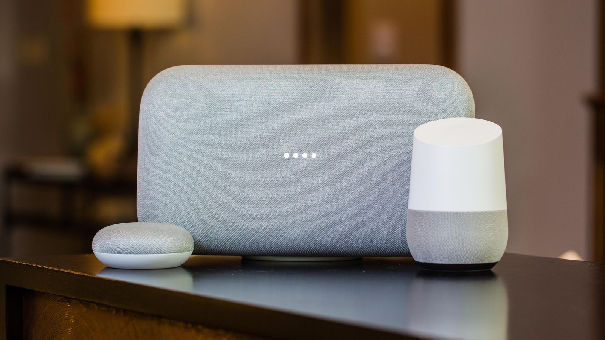

Google Home, es una marca de altavoces inteligentes desarrollados por Google. El primer dispositivo se anunció en mayo de 2016 y se lanzó en Estados Unidos en noviembre de 2016, con lanzamientos posteriores en otro países durante todo 2017 y en español en julio de 2018.
Google Home permite a los usuarios utilizar comandos de voz para interactuar con servicios del asistente personal de Google, llamado Google Assistant. Se integra con un gran número de dispositivos, tanto de la marca como de terceros, lo que permite a los usuarios escuchar música, controlar vídeos y fotos,recibir noticias o controlar dispositivos enteramente por voz. Los dispositivos de Google Home llevan así integrada la automatización en casa.
Articulos Sobre Google Home Mini
Colores
La Google Home Mini se está volviendo más colorida. Disponible ya en los colores blanco, negro y coral, la bocina inteligente de US$50 estará disponible pronto en el color turquesa.
La bocina en los cuatro colores tiene el mismo exterior de malla que envuelve al pequeño dispositivo en forma de disco y que está potenciado por Google Assistant. La Google Home Mini responde a comandos de voz a través de Google Assistant, y le puedes pedir que controle los dispositivos de tu hogar inteligente, revisar tu calendario, buscar la Web, entre otra tareas.
Precios
Se rumoreó su llegada para este año y, efectivamente, así ha sido. Google Home ya está a la venta en España, y pueden adquirirse varios modelos.
Los altavoces inteligentes de Google llegan al mercado español, aunque solo dos de los tres modelos hasta ahora presentados. Por el momento se ha ampliado la disponibilidad de Google Home y Google Mini para este país, sin ver de momento el Google Home Max, y se confirman también los precios de venta: 149 euros el Google Home y 59 euros el Google Home Mini.

Idiomas
¡Google Home ya habla y entiende español!
A principios de junio, Google comenzó a habilitar como idioma opcional al español de EE.UU., México y España en sus bocinas inteligentes como la Google Home Mini y Home. Y el 26 del mismo mes, ambas bocinas se hicieron disponibles en México.
La diferencia entre las opciones de español está basada en el acento de Google Home y algunas optimizaciones que reflejan más cada una de las culturas. La bocina también entiende mejor el lugar donde se encuentra para ofrecer una mejor experiencia. Aquí te mostramos cómo configurar Google Home en español.
Mas Informacion
Si quieres mas informacion sobre este gran articulo ingresa a:
Google Home Mini
{kind=link}
{kind=link}
{kind=link}
{kind=link}